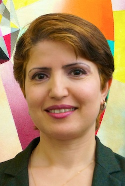

Friends, Each year, the Fellowship of Reconciliation awards international, national, and local peace prizes to individuals or organizations that have made life-long commitments in their work for peace, justice, and reconciliation. FOR's 2014 award recipients are inspirational change-makers. Their grassroots efforts have inspired countless others to join the cause of ending violence, promoting peace, and standing up for justice and human rights. And the winners are...
International award The Pfeffer Peace Award goes to Dr. Widad Akrawi. FOR's International Pfeffer Peace Award was established in 1989 by Leo and Freda Pfeffer to honor those around the world working for peace with justice. Dr. Widad Akrawi, a Danish citizen of Kurdish ancestry, is this year's recipient. An advocate for human rights and peace movements in the Middle East and North Africa region, Dr. Akrawi is a global health expert, author, lecturer, and lobbyist. She is co-founder and president of Defend International, a nongovernmental organization devoted to peace, democracy, diplomacy, human rights, and medical research. As an outspoken peace activist, Dr. Akrawi was forced to leave the Kurdistan region of Iraq after the first Gulf War in 1991. She sought political asylum in Denmark, where she established citizenship and became a student, earning a master's degree in genetics and a PhD in international health and cancer epidemiology. She was the first young woman of Middle Eastern descent to advocate a ban on the illicit trade of small arms and light weapons. She has campaigned against gender-based violence, torture, and other human rights abuses. Dr. Akrawi is an advocate of chemical and biological disarmament, conventional disarmament, and international peace and security. Among her many accomplishments, Dr. Akrawi has created momentum in favor of "a UN resolution on a strong and an effective Arms Trade Treaty to prevent the illicit trade in small arms and light weapons that might be used for acts of genocide, crimes against humanity, or terrorism." She has also spoken out against armed gender-based violence. She successfully lobbied for the UN Declaration of Commitment to End Sexual Violence in Conflict. In 2013, she was successful in her efforts to help pass UN Resolution 2117, dedicated to halting illicit transfer, destabilizing accumulation, and misuse of small arms and light weapons around the world. Dr. Akrawi was the recipient of the 2013 "Special Prize" awarded by the National Organization for Future Generations, based in Algeria, for her passionate campaign to bridge the gap between civilizations and cultures. The Special Prize is significant because it honors exceptional leaders in the Middle East and North Africa region who have made valuable contributions to humanity by promoting a culture of coexistence and harmony. Speaking about Defend International when she won this prize, she said, "I strongly believe that we have exceptional members who do not spare any effort to promote peace and democracy through cultural relations and diplomacy." U.S. award The Martin Luther King, Jr. Award goes to Rev. Dr. William J. Barber II. The Martin Luther King, Jr. Award was established by FOR in 1979 to recognize unheralded persons or groups working in the United States in the tradition of Rev. Dr. King. This year the award is presented to Rev. Dr. William J. Barber II, pastor of Greenleaf Christian Church in Goldsboro, N.C. Rev. Barber is president of the North Carolina state branch of the National Association for the Advancement of Colored People as well as a member of its national board. In 2006, he convened the first organizing meeting of the "Historic Thousands on Jones Street People's Assembly Coalition," known as "HKonJ." As leader of this coalition of organizations and individuals, Rev. Barber sought justice in North Carolina by fighting a school board attempt to reinstate segregation in Wake County Schools. He also led a successful campaign to increase the minimum wage. After the 2013 legislative session of the North Carolina state government, where laws that were seen as immoral by the coalition were passed, HKonJ worked under the banner of the Forward Together Moral Movement by organizing "Moral Mondays." Rallies and marches brought out many thousands of activists to peacefully call for justice from the North Carolina legislature through nonviolent direct action. The coalition has protested against North Carolina's government for infractions to voting rights, reduction of social programs, changes in tax legislation, repeal of the Racial Justice Act, and restrictions on abortion rights. The grassroots social justice movement that started in North Carolina has now spread to Georgia and South Carolina, capturing global attention. Rev. Barber says he is "helping to build a new progressive movement in North Carolina." He emphasizes the need for collective action. "'We' is the most important word in the social justice vocabulary," he says. "The issue is not what we can't do, but what we can do when we stand together. With an upsurge in racism/hate crimes, criminalization of young black males, insensitivity to the poor, educational genocide, and the moral/economic cost of a war, we must stand together now like never before." Local awards The Nyack, N.Y. Area Peace Prizes go to Kim Cross and the Nyack Center, and Herb Kurz. Begun in 2006 to honor an organization or individual involved in significant peace and justice work in the community of FOR's national headquarters, the Nyack Area Peace Prize is awarded this year to two recipients: Kim Cross and the Nyack Center, and Herb Kurz. Kim Cross and the Nyack Center Kim Cross has been executive director of the Nyack Center for 13 years. Founded in 1990 by a group of concerned citizens, Nyack Center is housed in a renovated historic church in the heart of Nyack, N.Y. Its mission is to create interpersonal connections that cross social, cultural and economic boundaries. The center aims to improve the lives of people in the Nyack community by supporting children, teenagers, and families through educational and recreational programs. This nonprofit organization offers a welcoming gathering space for vital before- and after-school programs and provides access to computers for students. Other activities include summer camp, cultural celebrations, and community events. Since founding the center, Ms. Cross, her staff and volunteers have worked steadily to increase the number of programs serving community needs, always maintaining a family-focused atmosphere. They have collaborated with many other community organizations, including Nyack Public Schools, Rotary, the local YMCA, and Nyack library. Currently, the center serves more than 40 children in its before-school "Breakfast Club" program and 85 young people in the after-school program. Numerous teens participate in "Late Night Teen Fridays," a substance-free performance program run by and for teenagers. Future plans include building a sound and recording studio on premises, and offering healthy cooking, music, and painting classes to adults and seniors. Ms. Cross credits the center's success on its very supportive members of the community and the board, noting that they have sustained incredibly generous support even in tough economic times. Ms. Cross says the fact that some staff have worked there for as many as 20 years shows their devotion to the children and the center's mission. She recognizes the center's success when she sees children who have been in its programs since kindergarten become staff members and wonderful adults who are good members of both their families and the community. Herb Kurz Herb Kurz founded the Presidential Life Insurance Company in Nyack, N.Y. in 1964. Mr. Kurz has lived his personal and professional life as a model citizen, caring about and working toward justice and equality for all. He has been a progressive supporter of civil-liberties activism. As director of the Presidential Life Insurance Company, Mr. Kurz has long practiced affirmative action hiring of both women and people of color. Many of his business practices were ahead of their time, setting precedents for socially responsible actions. For example, Herb supported the anti-apartheid movement by establishing a policy of never investing funds in apartheid-era South Africa. He has also demonstrated integrity in his business policies by acting in the best interest of Presidential Life shareholders -- for example, saving his clients' money by raising his own capital and not paying high fees for capital raised on Wall Street. Herb was honored by President Clinton at the White House Conference on Corporate Citizenship in 1996 for operating a business that "modeled good values," and on the floor of the U.S. Congress. As a philanthropist, Mr. Kurz has supported numerous Rockland County organizations, including Rockland Community College. In addition, he was the key funder of the NYU Tamiment Library's Frederic Ewen Academic Freedom Center, named for his uncle, a Brooklyn College professor who was blacklisted during the McCarthy era. Mr. Kurz also endowed a chair in constitutional rights at Brooklyn College, his alma mater. After World War II, in which he served as a navigator aboard B-26 bombers, he founded Veterans Against Discrimination, which became an active element within the radical Civil Rights Congress. Mr. Kurz says, "At Presidential, I place diversity in the work force as a high priority ... I've been holding onto a working-class consciousness in the business world."
Congratulations to this year's FOR Peace Award winners! You are an inspiration to us all! The awards ceremonies for 2014 are still being finalized. If you'd like to hear about the awards ceremonies when they are announced, please reply to this email and let me know. Meredith Krashes Nicolich
Advancement Associate
Fellowship of Reconciliation Images, from top: Ed Schipul, Greg H, Widad Akrawi, Ted (twbuckner), Kim Cross, Herb Kurz, Brenda (taniwha), Creative Commons licenses. |